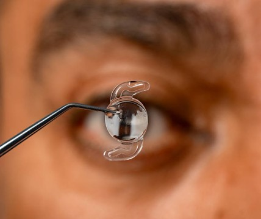

With advanced IOL technology and decades of experience, we provide personalised lens replacement solutions designed around your vision needs.

An intraocular lens (IOL) is a small artificial lens implanted inside the eye to replace the eye’s natural lens. IOL implantation is commonly performed during cataract surgery, when the cloudy natural lens is removed and replaced with an artificial one. Different types of IOLs are available to address varying vision needs, including distance, intermediate, and near vision, as well as astigmatism. Your eye specialist can recommend the most suitable option based on your eye health, lifestyle and visual requirements.
IOL surgery is a precise procedure in which the natural lens is removed and replaced with a carefully selected artificial intraocular lens.
Your eyes are thoroughly examined to assess your vision, eye health, corneal measurements, and other factors that help determine the appropriate IOL.
Based on your visual requirements, lifestyle, and eye measurements, the ophthalmologist discusses suitable IOL options and helps you understand what to expect from each.
The eye is prepared for surgery using prescribed medications and local anaesthesia to ensure the procedure is comfortable.
Through a small incision, the natural lens is carefully removed using advanced surgical techniques.
The selected intraocular lens is inserted through the small opening and positioned securely inside the eye.
After the procedure, your eye is monitored and you receive instructions regarding medicines, precautions and follow-up visits to support proper recovery.
We combine experienced ophthalmic care, advanced technology and personalised treatment planning to support patients throughout their vision correction journey.
Our experienced ophthalmologists assess each patient's visual requirements and eye health before recommending an appropriate IOL option.
We use modern diagnostic and surgical technologies to support precise measurements, lens selection and IOL implantation.
From your initial consultation to post-operative follow-ups, our team provides guidance and care at every stage of your treatment.
Monofocal IOLs are designed to provide clear vision at one primary distance, most commonly distance vision. Patients may still need glasses for near and intermediate activities such as reading or computer work. Premium monofocal lenses may also incorporate features such as ultraviolet protection and optical designs intended to support contrast and visual quality.
Multifocal IOLs are designed to provide vision at more than one distance, potentially reducing dependence on glasses for activities such as distance and near vision. Some patients may experience visual effects such as glare or halos, particularly in low-light conditions. Newer multifocal IOL designs aim to reduce these visual disturbances while providing a broader range of vision.
Symfony and trifocal IOLs are advanced lens options designed to provide vision across multiple distances. Depending on the specific lens and the patient's individual eye characteristics, they can provide distance and intermediate vision along with useful near vision, while aiming to minimise unwanted visual disturbances.
Astigmatism occurs when the cornea has an irregular curvature, creating cylinder power in the eye. Standard monofocal or multifocal IOLs primarily address the spherical component of vision correction, while toric IOLs are specifically designed to correct corneal astigmatism along with the spherical component. This can help reduce the need for glasses for distance vision in suitable patients.
Following your ophthalmologist's instructions after IOL surgery can help support healing and reduce the risk of complications.
| Do | Don’t |
|---|---|
| Use prescribed eye drops exactly as instructed. | Do not rub or press on your eyes. |
| Attend all scheduled follow-up appointments. | Avoid getting water or unclean substances directly into the operated eye as advised. |
| Wear protective eyewear if recommended. | Avoid strenuous exercise or heavy lifting until your doctor permits it. |
| Keep your hands clean before applying eye drops. | Do not stop prescribed medicines without consulting your doctor. |
From diagnosis to follow-up, we focus on making your IOL surgery journey clear, organised and personalised.
Meet our ophthalmologist for a detailed assessment of your vision, eye health and treatment requirements.
We perform the necessary eye examinations and measurements required for surgical planning and IOL selection.
Your doctor discusses the available IOL options based on your eye measurements, visual goals, lifestyle and clinical suitability.
Once the appropriate treatment plan is finalised, our team guides you through the procedure, preparation and necessary precautions.
The natural lens is removed and replaced with the selected intraocular lens using appropriate surgical techniques.
Post-operative appointments help your ophthalmologist monitor healing and visual recovery and make any necessary adjustments to your care.
There is no single IOL that is best for every patient. The right lens depends on your eye health, visual requirements, lifestyle, existing prescription and expectations from surgery.
If your priority is clear distance vision, near vision, intermediate vision or a combination of distances, your doctor can help identify IOL options suited to your needs.
Conditions such as corneal irregularities, astigmatism, retinal problems or other eye conditions may influence which IOL options are appropriate for you.
Your daily activities, including reading, computer use, driving and other visual tasks, can help determine which range of vision may be most useful for you.
IOL selection involves precise eye measurements and a detailed clinical assessment. Your ophthalmologist will recommend an option based on your individual eyes, visual goals and medical suitability.
A family legacy of ophthalmology, treating Delhi since 1951.
35+ years' expertise; trains ophthalmologists across India.
15+ years in advanced phaco & retinal care.
15+ years in cornea & specs-removal surgery.
15+ years in advanced retina & micro-incision surgery.
Doctors give time to listen, understand and diagnose properly. Dr Ankita is very patient with all and her treatment has helped immensely. Staff members are smiley and helpful. Highly recommend.
I had laser cataract surgery here and am very happy with the results. The staff were professional, the process was smooth, and their care was excellent. I highly recommend this centre for cataract and other eye surgeries.
Dr. Aman is a true specialist in his field. Great advise and clear explanation during our consultation. Another very satisfying experience.
Schedule your IOL consultation with our specialists at Khanna Eye Centre. We'll examine your eyes, explain your options honestly, and provide a clear treatment plan.